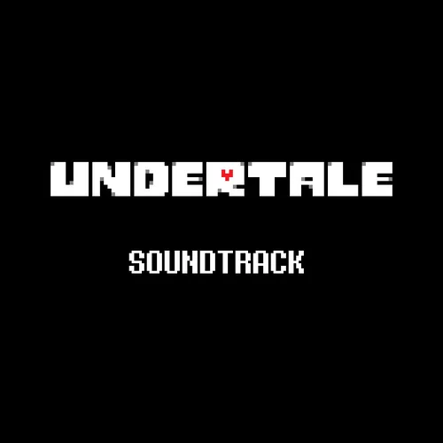

UNDERTALE
- 101 Canciones
- 1 h 30 min de duracion
- Autores:
- Toby Fox
Esta es una colecion de las bandas sonoras que a mi parecer son de las mejores que he escuchado algunas de las canciones de estos OST estan en mi libreria de musica. Esta selecion es personal pero si hay muchas mas que aun no he escuchado.